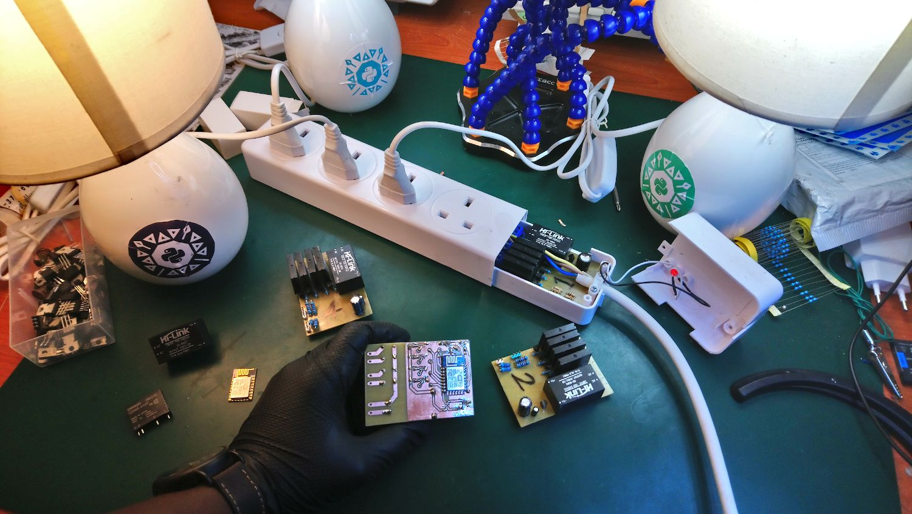
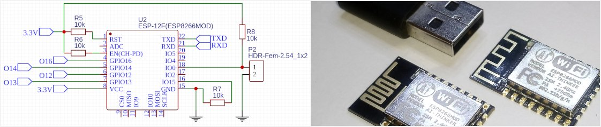
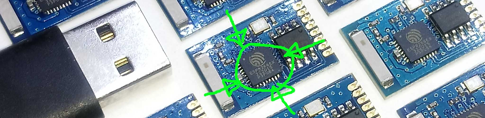
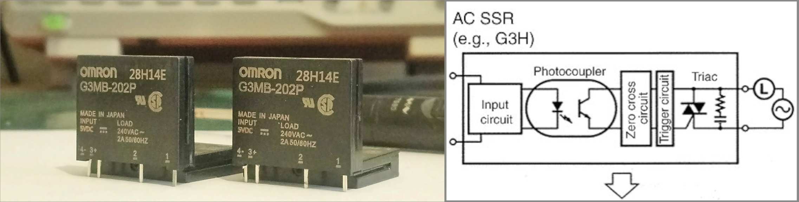
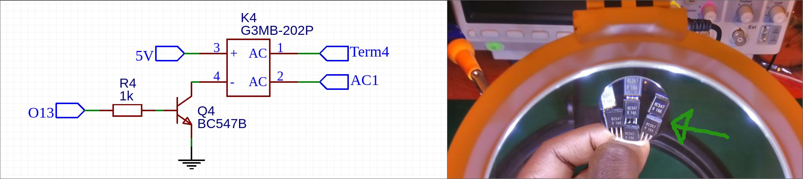
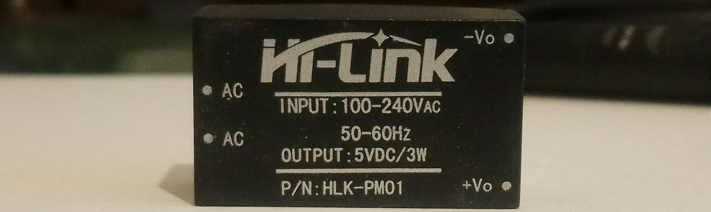

INTRO
The powerstrip pictured below (fig.1) runs Python 3 and features IEEE 802.11 b/g/n Wi-Fi.
With the right python script(s) loaded, you can toggle each port over LAN and
with the right networking setup you can do the same, over the Internet from anywhere in the world
 !
!
 fig.1 The shiznit.
Prelude
Sometime late 2016, our Head of Dept put out an RFP for a python related presentation/workshop that we were tasked to come up with and having hobbied a bit with MicroPython on SoCs, I thought I'd field something on the topic. We thus came up with a lightshow of desklamps toggled by rudimentary prototype-esque hardware all controlled by Python. During the presentation session, after taking them through MicroPython internals, the participants had a bit of fun scripting arbitrary light patterns/sequences in python. Informative and fun.
Few months later, we ran a remix of the session for our MOB Programming Workshop at Nairobi Tech Week 2017, toggling connected desklamps by tweeted hashtags and again 2 years later, for one of our Python-Nairobi Meetups with refined hardware (Pictured in fig.1 above), which I'll discuss here.
If you're keen to checkout the schematics, click here for the EASYEDA_PROJECT. Plenty of context therein for this article as I'll be discussing the main components that make it work below.
But first.....
Some words of caution
This article describes the design and construction of the above described gizmo for the sole purpose of demonstrating what's possible with off the shelf tech described herein.
The concepts and design behind the subject device are of hobby quality. They have not been fully thought through and do not adhere to any safety standards. The device is neither suitable nor intended for any use ("production" or otherwise) apart from illustrating what's possible.
This project involves working with mains electricity. This can be fatal! Replicate at your own risk! And if you do, make it under the supervision of an expert in the field or electronics and or cardiopulmonary resuscitation (CPR).
s/f/r/g" with a link to a safer design, sans all hi voltage stuff.Keep your eyes peeled)
Now that that's out of the way, lets talk about the thing from the heart of it all the way up to the mains.
The Heart of it - ESP12
The ESP12 (fig.2 below) is really a ESP8266EX nicely soldered onto a 24x16mm breakout board with a PCB trace WiFi antenna, oscillator, SPI flash memory and a few passives all tucked away under a nice square FCC approved RFI shield. I got the AI-Thinker ones. Checkout their datasheet
 fig.2 ESP12 in schematic (left). Example AI Thinker ESP-12 PCB right.
At the core of it is the mentioned ESP8266EX (fig.3 below), a system-on-chip (SoC) ic that integrates (among other things):-
- a Tensilica L106 32-bit RISC processor clocked at 80MHz (capable of up to 160MHz if it left the factory defect free)
- 80kB of ram but you only get to work with max 50kB for your data.
- a 2.4 GHz transceiver radio for Wi-Fi
- and many other things:-checkout the datasheet.
 fig.3 ESP8266EX (circled in green) on an ESP-03 PCB. USB male connector to the left for size comparison
Meager as it sounds, this SoC is beefy enough to run its own MicroPython port that provides a python3 interface to all the features within including Wi-Fi and all usable 11 GPIO pins, 4 of which we will use to control each outlet on our powerstrip. (The 4 being GPIOs 12, 13, 14 and 16, see schematic in fig.2 above)
Operation is simple:- pull any of those 4 pins high (from code) and the respective outlet gets toggled on via a Solid State Relay (SSR from here on). The outcome of reverse is implicit, pull a pin low, off goes the corresponding outlet.
Controlling mains - The SSR
To switch the live pin on each outlet, I decided to go with the first capable (and affordable) SSR I could find on Nerokas:- the G3MB-202P, one for each outlet. NB:- It's now discontinued. Successor as at time of this writing is OMRON's G3MC series PCB SSR. Other manufacturers offer good replacements.
 fig.4 Left:- OMRON G3MB-202P SSR. Right:- schematic of typical SSR
Coming in a nice compact 20x24.5x5.5mm package and capable of max 2 Amps thru the high voltage side, It's more than good enough for the job since we are only going to switch 240V 3-Watt LED lamps with it. (For the murrcans, mm here = millimeters. For moonlanding units, divide by 25.4. Also, Apollo used SI units for the critical stuff)
Another nice thing is that it provides opto-isolation out of the box. Yaani the low and high voltage side are electronically isolated by an optocoupler and all it asks for is 5V to power its internal IR LED.
Operation is simple, supply 5V to pins 3(+) & 4(-), and the HV side, pins 1 and 2, complete the AC circuit for you.
Very oversimplified SSR operation but I'd like to keep the article simple. If you want more detail on how
the thing operates, check this guide out. Also, good thing to keep in mind
a few PRECAUTIONS for the component. (useful should you decide to replicate)
There is one small prollem however, our ESP12 will only put out 3.3V from any of the said 4 GPIO pins which is insufficient to switch on our SSR. When any of those GPIO pins go high at 3.3V, we need to convert that to a 5V input for the SSR to fully power on (see the datasheet). Thus we require a logic level converter of sorts!
Logic level conv - ESP12 => BC547 => SSR
To carry out the 3.3V to 5V conversion, I chose a NPN transistor as a "low side" switch and settled on the BC547 because I had plenty at home not to mention that it's also quite a capable component for the job.
 fig.4 Left:- BC547 (Q4) in schematic as low side switch. Right:- A bunch of BC547s under a magnifying glass.
Just to show it's a good fit, the chosen SSR's IR LED draws 10mA at 5V, which (looking at the datasheet)
is well below the BC547's Ic(max) of 0.1A and Vceo(max) of 45V.
Also, the ESP8266 can supply max 12mA of current, which is more than the 1mA the BC547 requires for
Ib in order to supply the SSR's LED with the 10mA it needs (Ib = Ic/10 = 1mA).
For good measure, lets "cap" that base current at 2.5mA like so:- When Ic = 10mA, Vbe(sat) = .72V
and with the ESP supplying 3.3V on each GPIO pin we drop 2.58V with a resistor whose value will
be R = V/I = 2.58V/0.0025A = 1032Ω.
To make things simple, 1KΩ resistor would suffice - Brown-Black-Red and hopefully the 5%-Gold will take
care of the 32Ω change (or not).
Power supply
The power strip gets its supply from 240V mains (in my side of the world), but how do we light up the 5V SSR and 3.3V ESP12? We could populate the PCB with a transformer and some rectification extras but we're pressed for space on the board and in our enclosure.
Enter the HLK-PM01 (fig.5 below), an ultra-compact power module that comes in at 34mmx20mmx15mm. It takes in 90 to 264V and supplies 5V at max 0.6A current with output noise of "i didn't check"/"not worried about it" decibels.
 fig.5 ultra-compact 5V power supply module.
This is more than enough to run all the things on the board and then some, but just for fun let's look at ballpark calculations:-
- 4x OMRON SSR Opto IR LED coming in at total 10mA x4 = 40mA
- 1x ESP12 at about 80mA average operating voltage (spikes can be taken care of by a CAP yes???)
- 4x ESP12 pin current draw at total 12mA x4 = 48mA
So far we have 168mA. Add a very very generous 200mA for misc stuff on the board and you have 368mA...well within what the HLK module can supply.
Finally for our 3.3V ESP12, we step that HLK's 5V down with a linear voltage regulator - the L78L33 which does max 100mA. With a good enough CAP to sort out the ESP's current spikes, we have our rudimentary powersupply sorting all our electronics.
The Enclosure
One of the goals of this project was to have everything neatly tucked away into an off the shelf powerstrip enclosure. At a local supermarket, I stumbled upon a Solatek MG-4U - a 4 port power strip (fig. 5 below) with enough room for a 72mmx52mm PCB with 25mm height for components (once you chuck the 3 MoV surge protector in it)
The strip has a nice rigid coper live rail that runs the length of all 4 ports. If you subdivide into 4 there will still be enough plastic standoff to hold each port section sturdy-well. On each of these pieces, there should be enough real estate to neatly solder a 16 AWG wire which we will connect to the respective SSR via screw terminal.
With the earth and neutral rails left intact, supply the board with AC power on he screw terminal X3, routing live thru X3.2 and tapping neutral at X3.1.
Outro
- Checkout schematic on easyeda here:- EASYEDA_PROJECT
- Stay tuned for part 2 [3, [4, [5]]] where we look at interesting use cases (including voice control)
In the meantime, here is a low res vidya of the thing running a python script that does a round robin toggle for all 4 ports
Here's the script that does the above business:-
1 2 3 4 5 6 7 8 9 10 11 12 13 14 15 16 17 18 19 20 21 22 | import machine
import utime
pins = [machine.Pin(p, machine.Pin.OUT) for p in [13, 12, 14, 16]]
for p in pins:
p.off()
def onseq():
for pin in pins:
pin.on()
utime.sleep(1)
def offseq():
for pin in pins:
pin.off()
utime.sleep(1)
while 1:
onseq()
offseq()
|